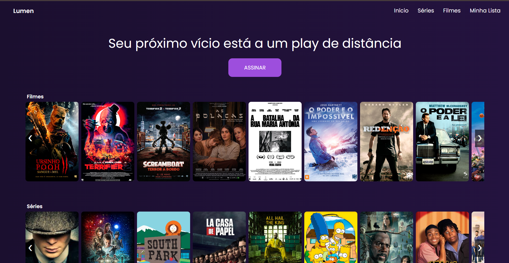

André Levy
Sou estudante do curso técnico em Desenvolvimento de Sistemas na EEEP Professor César Campelo. Tenho foco em desenvolvimento Front-End, com interesse na criação de interfaces funcionais, responsivas e bem estruturadas. Neste portfólio, apresento projetos desenvolvidos durante minha formação, sempre buscando evolução contínua e boas práticas de desenvolvimento.
Tecnologias e Linguagens
HTML5
CSS3
Java Script
Formação
2025-2026
HTML5 e CSS3 - Curso em Vídeo
Conclusão dos 5 módulos completos do curso, com domínio dos principais conceitos de estruturação e estilização de páginas web. Possuo os 5 certificados, comprovando a conclusão integral da formação.
2025
Aprendendo a Programar com Games e IA – Fundação Demócrito Rocha
Curso focado em lógica de programação, desenvolvimento de jogos e fundamentos de Inteligência Artificial. Participei da competição final, desenvolvendo um jogo autoral e conquistando o 2º lugar entre os participantes.
Projetos

2025
Projeto Streaming
Projeto Front-End desenvolvido com HTML5 e CSS3, simulando uma plataforma de streaming.
Saiba mais
Projeto desenvolvido no 2º ano do Ensino Médio com o objetivo de praticar a construção de sites e a organização de interfaces web. O tema escolhido foi Streaming, simulando uma plataforma de exibição de filmes e séries. O projeto foi utilizado para aplicar conceitos de HTML5 e CSS3, incluindo estruturação de páginas, estilização de componentes, organização visual e responsividade básica, servindo como base para o desenvolvimento das minhas habilidades em Front-End.